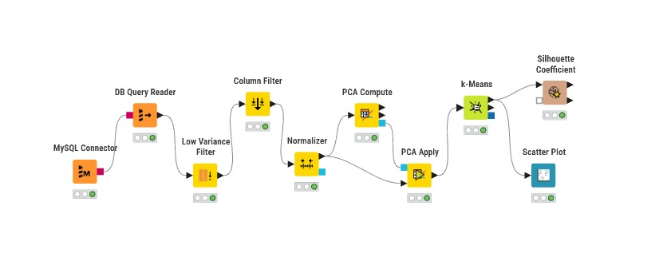
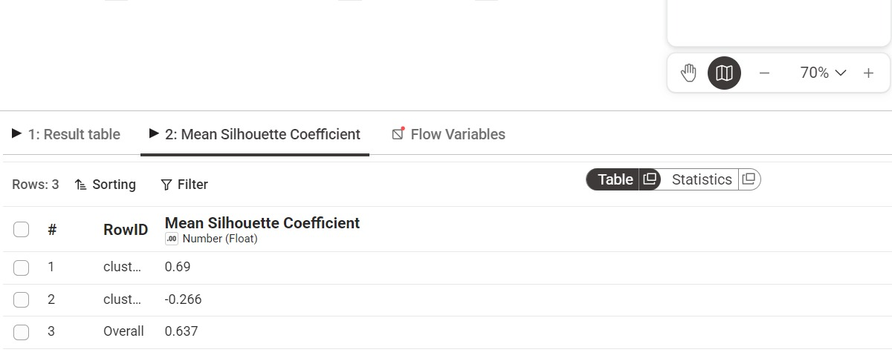
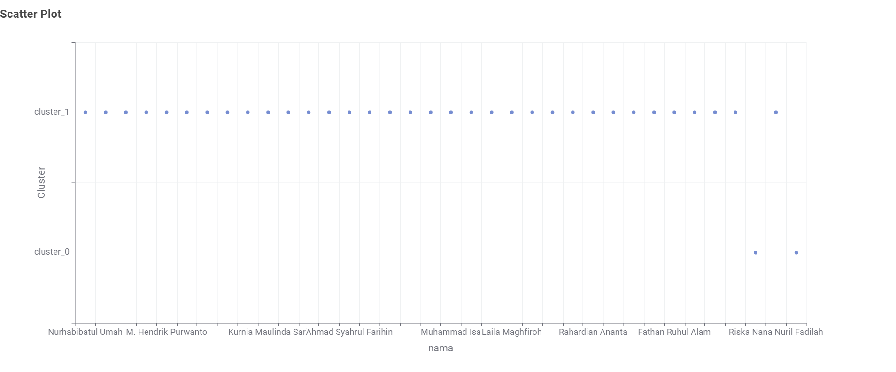
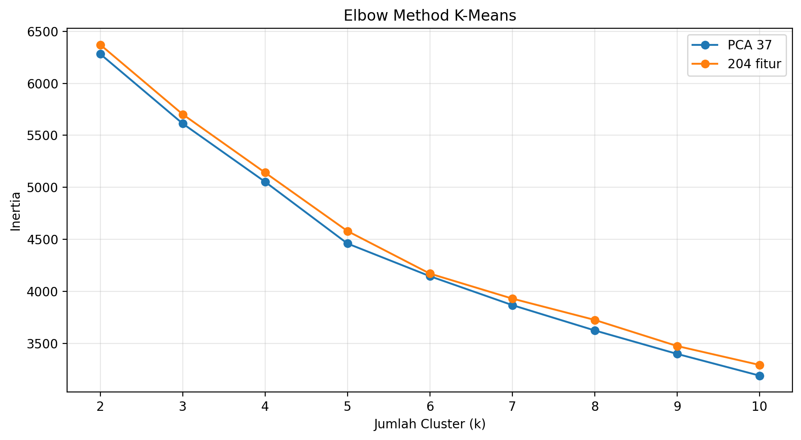
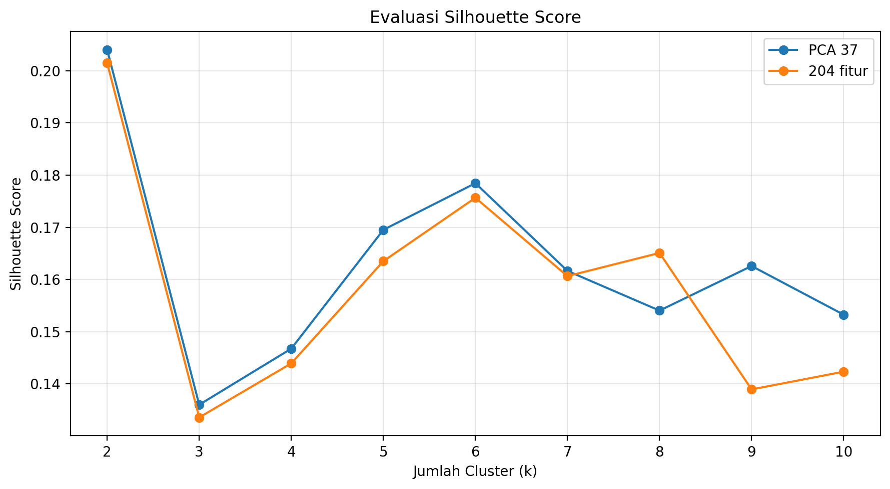
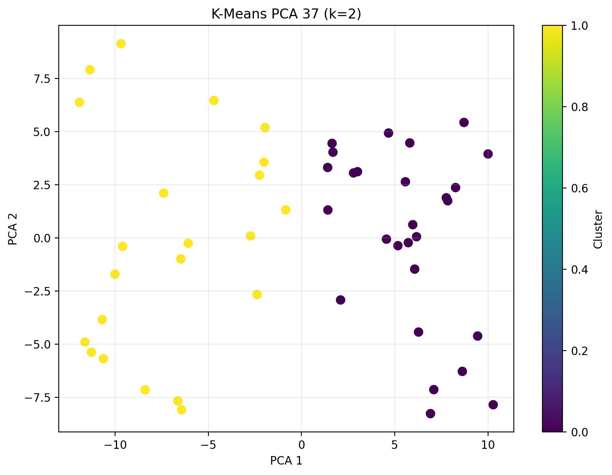

Ekstraksi Fitur dan Clustering#
1. Pengambilan Data#
Data yang digunakan merupakan hasil ekstraksi fitur dari tiga jenis polutan, yaitu CO, NO₂, dan SO₂. Setiap polutan memiliki 68 fitur hasil ekstraksi menggunakan TSFEL sehingga seluruhnya menghasilkan:
Data hasil ekstraksi disimpan dalam database MySQL pada tiga tabel berbeda. Ketiga tabel tersebut kemudian diambil dan digabungkan menggunakan node MySQL Connector dan DB Query Reader pada KNIME.
Data gabungan yang digunakan pada analisis KNIME terdiri atas 36 baris data mahasiswa dengan fitur dari ketiga polutan.
2. Preprocessing Data#
Sebelum dilakukan clustering, data melewati beberapa tahap preprocessing berikut:
Low Variance Filter digunakan untuk menghapus fitur yang memiliki nilai konstan atau variansi sangat rendah.
Column Filter digunakan untuk memilih kolom yang diperlukan, menghapus kolom identitas yang tidak digunakan dalam perhitungan, serta menyisakan satu kolom
namadan satu kolomdaerah.Normalizer digunakan untuk menyamakan skala setiap fitur agar fitur dengan nilai besar tidak mendominasi proses clustering.
Normalisasi diperlukan karena nilai dari setiap fitur TSFEL mempunyai rentang yang berbeda.
3. Reduksi Dimensi Menggunakan PCA#
Data hasil normalisasi memiliki jumlah fitur yang cukup banyak. Oleh karena itu, digunakan metode Principal Component Analysis (PCA) untuk mengurangi jumlah dimensi data.
PCA bekerja dengan mengubah sekumpulan fitur yang saling berhubungan menjadi sejumlah komponen utama yang tidak saling berkorelasi.
Pada workflow KNIME, proses PCA menghasilkan 37 komponen utama dengan nilai information preservation sebesar 100%. Artinya, informasi pada data yang digunakan masih dapat dipertahankan dalam komponen utama yang dihasilkan.
4. Clustering Menggunakan K-Means#
Hasil PCA digunakan sebagai masukan pada metode K-Means. K-Means membagi data ke dalam beberapa kelompok berdasarkan kedekatan karakteristik setiap data.
Jumlah cluster terbaik ditentukan dengan membandingkan nilai Silhouette Coefficient untuk beberapa nilai k.
Hasil pengujian jumlah cluster pada KNIME adalah:
Jumlah Cluster |
Silhouette Coefficient |
|---|---|
2 |
0.637 |
3 |
0.102 |
4 |
0.036 |
Nilai Silhouette Coefficient tertinggi diperoleh pada k = 2, yaitu sebesar 0.637. Oleh karena itu, jumlah cluster yang digunakan pada hasil akhir adalah dua cluster.
5. Workflow KNIME#
Berikut merupakan workflow KNIME yang digunakan untuk melakukan pengambilan data, preprocessing, reduksi dimensi menggunakan PCA, K-Means, dan evaluasi hasil clustering.


Fig. 4 Workflow preprocessing, PCA, K-Means, dan evaluasi clustering pada KNIME.#
Workflow tersebut terdiri atas beberapa node berikut:
MySQL Connector untuk menghubungkan KNIME dengan database MySQL.
DB Query Reader untuk mengambil dan menggabungkan data hasil ekstraksi fitur CO, NO₂, dan SO₂.
Low Variance Filter untuk menghapus fitur dengan variansi rendah.
Column Filter untuk memilih fitur dan kolom identitas yang diperlukan.
Normalizer untuk menyamakan skala setiap fitur.
PCA Compute untuk menghitung model PCA.
PCA Apply untuk menghasilkan komponen utama.
K-Means untuk membagi data menjadi beberapa cluster.
Silhouette Coefficient untuk mengevaluasi kualitas hasil clustering.
Scatter Plot untuk menampilkan persebaran hasil cluster.
6. Hasil Silhouette Coefficient KNIME#
Silhouette Coefficient digunakan untuk mengukur kesesuaian setiap data terhadap cluster tempat data tersebut berada.
Nilai silhouette berada pada rentang:
Interpretasi nilai silhouette adalah:
Nilai mendekati 1 menunjukkan data berada pada cluster yang sesuai.
Nilai mendekati 0 menunjukkan data berada di antara dua cluster.
Nilai negatif menunjukkan data kemungkinan berada pada cluster yang kurang sesuai.
Berikut merupakan hasil evaluasi clustering menggunakan Silhouette Coefficient untuk dua cluster.


Fig. 5 Hasil Silhouette Coefficient pada K-Means dengan dua cluster.#
Hasil evaluasi menunjukkan nilai silhouette untuk masing-masing cluster sebesar 0.690 dan -0.266, sedangkan nilai silhouette keseluruhan adalah 0.637.
Nilai keseluruhan sebesar 0.637 menunjukkan bahwa hasil clustering memiliki struktur pengelompokan yang cukup baik. Sebagian besar data sudah berada pada kelompok yang sesuai, walaupun masih terdapat beberapa data yang memiliki kemiripan dengan cluster lainnya.
7. Visualisasi Hasil Clustering KNIME#
Hasil clustering membagi data menjadi dua kelompok, yaitu cluster_0 dan cluster_1. Setiap titik pada grafik mewakili nama mahasiswa berdasarkan gabungan fitur hasil ekstraksi CO, NO₂, dan SO₂.


Fig. 6 Visualisasi hasil clustering menggunakan PCA dan K-Means pada KNIME.#
Berdasarkan visualisasi tersebut, sebagian besar data termasuk dalam cluster_1, sedangkan beberapa data lainnya termasuk dalam cluster_0.
Data atas nama Riska Nana Nuril Fadilah termasuk dalam cluster_0.
8. Analisis PCA dan Clustering Menggunakan Code#
Selain analisis menggunakan KNIME, pengujian juga dilakukan menggunakan Python terhadap data hasil ekstraksi window.
Data yang digunakan terdiri atas 49 window dan 204 fitur gabungan dari CO, NO₂, dan SO₂.
8.1 Low Variance Filter#
Sebelum PCA dilakukan, fitur konstan dihapus menggunakan Low Variance Filter.
Hasil proses tersebut adalah:
Keterangan |
Jumlah |
|---|---|
Jumlah fitur awal |
204 |
Fitur konstan |
30 |
Fitur setelah filter |
174 |
Perhitungannya adalah:
Sebanyak 174 fitur kemudian dinormalisasi agar memiliki skala yang sebanding.
8.2 Reduksi Menjadi 37 Komponen#
PCA digunakan untuk mereduksi 174 fitur menjadi 37 komponen utama.
Total explained variance yang dipertahankan oleh PCA 37 adalah:
Artinya, PCA 37 masih mempertahankan sekitar 98,93% informasi dari data setelah Low Variance Filter.
8.3 Penentuan Jumlah Cluster Terbaik#
Jumlah cluster terbaik diuji menggunakan nilai silhouette untuk beberapa nilai k.
Pengujian dilakukan pada dua jenis data:
Data setelah reduksi menjadi PCA 37.
Data fitur asli setelah Low Variance Filter dan normalisasi.


Fig. 7 Perbandingan evaluasi jumlah cluster pada PCA 37 dan fitur asli.#


Fig. 8 Perbandingan Silhouette Coefficient pada PCA 37 dan fitur asli.#
9. Perbandingan Hasil PCA 37 dan Fitur Asli#
Hasil perbandingan clustering adalah:
Metode |
Jumlah Data |
Jumlah Dimensi |
Cluster Terbaik |
Silhouette |
|---|---|---|---|---|
PCA 37 |
49 |
37 |
2 |
0.204031 |
Fitur asli setelah filter |
49 |
174 |
2 |
0.201475 |
Kedua metode menghasilkan jumlah cluster terbaik yang sama, yaitu dua cluster.
Nilai silhouette PCA 37 sebesar 0.204031, sedangkan fitur asli menghasilkan nilai 0.201475.
Selisih nilai silhouette adalah:
PCA 37 menghasilkan nilai silhouette yang sedikit lebih tinggi. Hasil ini menunjukkan bahwa PCA dapat mengurangi jumlah dimensi secara signifikan tanpa menghilangkan sebagian besar informasi dan tanpa menurunkan kualitas clustering.


Fig. 9 Visualisasi hasil K-Means pada data PCA 37 menggunakan Python.#
10. Perbedaan Hasil KNIME dan Code#
Nilai silhouette hasil KNIME tidak dibandingkan secara langsung dengan hasil Python karena kedua proses menggunakan susunan data yang berbeda.
Proses |
Data yang Digunakan |
Silhouette Terbaik |
Cluster Terbaik |
|---|---|---|---|
KNIME |
Data gabungan mahasiswa |
0.637 |
2 |
Python PCA 37 |
49 window time series |
0.204031 |
2 |
Python fitur asli |
49 window time series |
0.201475 |
2 |
Analisis KNIME menggunakan data hasil ekstraksi setiap mahasiswa, sedangkan analisis Python menggunakan hasil ekstraksi window dari data time series Asem Rowo.
Walaupun nilai silhouette berbeda, seluruh pengujian menghasilkan jumlah cluster terbaik yang sama, yaitu dua cluster.
11. Kesimpulan#
Data hasil ekstraksi fitur CO, NO₂, dan SO₂ berhasil dianalisis menggunakan KNIME dan Python.
Pada analisis KNIME, PCA menghasilkan komponen utama yang digunakan untuk K-Means. Jumlah cluster terbaik adalah dua cluster dengan Silhouette Coefficient sebesar 0.637.
Pada analisis menggunakan Python, PCA 37 mempertahankan sekitar 98,93% informasi. Cluster terbaik pada PCA 37 adalah dua cluster dengan silhouette sebesar 0.204031.
Pengujian pada fitur asli setelah Low Variance Filter juga menghasilkan dua cluster dengan silhouette sebesar 0.201475.
Hasil tersebut menunjukkan bahwa PCA 37 mampu mengurangi jumlah dimensi data dengan tetap mempertahankan hampir seluruh informasi. PCA 37 juga menghasilkan kualitas clustering yang sedikit lebih baik daripada penggunaan fitur asli setelah Low Variance Filter.